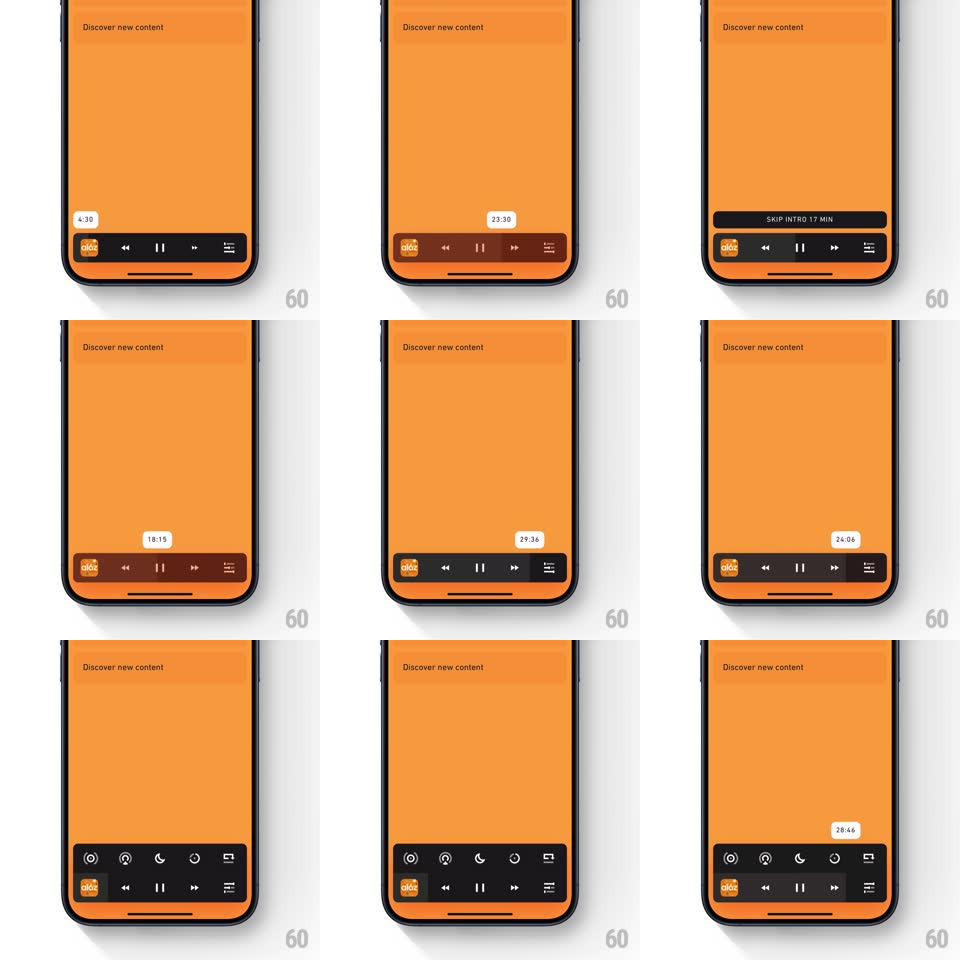

Media
Frame-by-frame

Rebuild this interaction 1:1: Agora's mini-player scrub - dragging along the bottom podcast player floats a white timestamp tooltip that tracks your finger, while a "SKIP INTRO" pill and an expandable quick-actions row appear above the bar.

Rebuild this interaction 1:1: Agora's mini-player scrub - dragging along the bottom podcast player floats a white timestamp tooltip that tracks your finger, while a "SKIP INTRO" pill and an expandable quick-actions row appear above the bar.
## Integration
Integration: stack-agnostic spec - springs given as stiffness/damping, timed motions as duration + curve; map every value to your framework and animation library of choice.
## Scene
Orange podcast app ("Discover new content" feed). Bottom mini-player: episode art thumb, skip-back, pause, skip-forward, queue icon. Above it on demand: a dark "SKIP INTRO 17 MIN" pill and a quick-actions row (speed, sleep timer, share, more icons).
## Motion spec
Pattern: scrub tooltip + progressive player chrome.
- Touch the progress area: the player bar grows slightly (height +6px, 150ms) and a white tooltip with the hovered timestamp (6:00, 23:00...) springs in above the touch point (scale 0.6 -> 1, spring ~400/22, ~200ms).
- Drag: tooltip tracks the finger horizontally with tight lag-free positioning; the timestamp ticks over in 15s steps with a subtle number roll (100ms per step); playhead fill follows at 1:1.
- Release: playback seeks with a soft haptic; the tooltip pops away (scale 1 -> 0.7 + fade, 150ms) and the bar height settles back.
- The "SKIP INTRO" pill slides up above the player when the playhead enters a marked intro range (spring ~320/26, ~250ms) and slides away past it.
- Tapping the queue/more icon expands the quick-actions row upward (icons stagger in 40ms apart, rise 8px + fade, 200ms each) over the player; tap again collapses (reverse, faster).
## Calibration
- Tooltip never leaves the screen edge - clamp with a soft 8px margin.
- Scrub is direct manipulation: no spring lag between finger and tooltip.
## Reduced motion
Tooltip fades in place; rows appear without stagger.
## Don't miss
- The timestamp tooltip is white with dark text - a deliberate contrast pop on the orange field.
- SKIP INTRO is contextual chrome: it belongs to the episode position, not the player state.